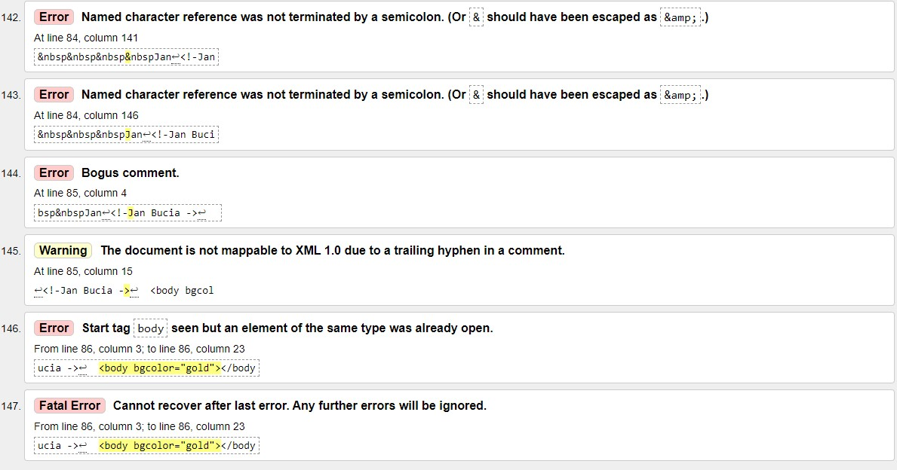

Walidacja HTML to proces, w którym narzędzie (walidator) sprawdza poprawność kodu pod kątem błędów składniowych. Testuje również zgodność ze specyfikacją użytego języka. Jest to szczególnie ważny etap, ponieważ może zdarzyć się, że np. niedomknięty znacznik spowoduje niepoprawne wyświetlanie zawartości strony.
Walidator to program sprawdzający poprawność dokumentu o określonej składni.
